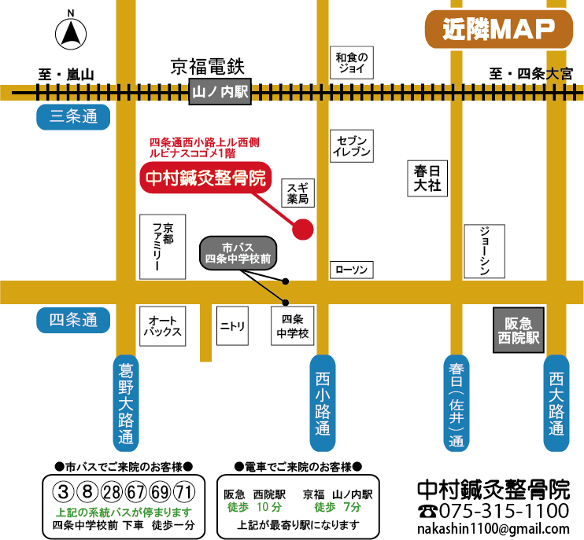

ページ
アクセス
院名
中村鍼灸整骨院
現在地
アクセス
アクセス
中村鍼灸整骨院
〒６１５－００６７ 京都市右京区西院小米町１１－１
TEL: ０７５－３１５－１１００
MAIL: nakashin1100@gmail.com
市バスでご来院のお客様
３、８、28、67、69、71系統「四条中学校前」下車 徒歩１分
電車でご来院のお客様
- 阪急「西院」駅下車 徒歩10分
- 京福「山ノ内」駅下車 徒歩7分

受付
受付時間・ご連絡先
受付時間（保険内施術）
| 曜日受付時間 | 月 | 火 | 水 | 木 | 金 | 土 |
|---|---|---|---|---|---|---|
| 午前8:30～12:00 | ○ | ○ | ○ | ○ | ○ | ○ |
| 午後15:30～19:30 | ○ | ○ | ☓ | ○ | ○ | ☓ |
受付時間（自費施術）
予約優先
| 曜日受付時間 | 月 | 火 | 水 | 木 | 金 | 土 |
|---|---|---|---|---|---|---|
| 8:30～20:30 | ○ | ○ | ※ | ○ | ○ | ※ |
※水・土曜は１２：３０まで